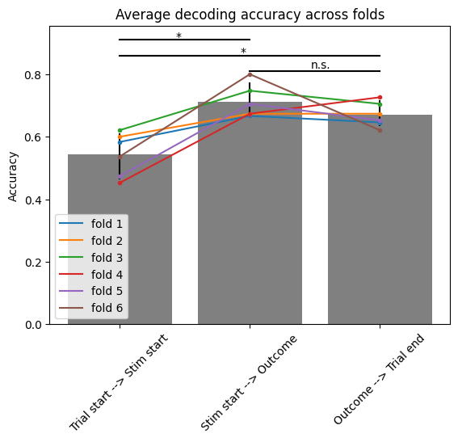

Question 4: Decoding Accuracy#
During which trial segment is variable C best decoded?
Approach#
Another way to frame this question is: during which trial segment is variable C best predicted from neural activity? To answer this version of the question, we’ll use a classification GLM, which is useful for predicting the labels of categorical variables like variable C. This model avilable in NeMoS as ClassifierGLM.
We need to compare decoding during three trial segments: from trial start to simulus onset, from stimulus onset to outcome time, and from outcome time to trial end.
# imports
%matplotlib inline
import warnings
from pynwb import NWBHDF5IO
from dandi.dandiapi import DandiAPIClient
import fsspec
from fsspec.implementations.cached import CachingFileSystem
import h5py
import pynapple as nap
import matplotlib.pyplot as plt
import numpy as np
import pandas as pd
import nemos as nmo
import jax
import scipy.stats as stats
jax.config.update("jax_enable_x64", True)
warnings.filterwarnings("ignore", category=RuntimeWarning)
warnings.filterwarnings("ignore", category=UserWarning)
Stream and load the data#
First, we’ll stream a representative animal directly from DANDI.
# anonymized dataset
dandiset_id = "218201"
filepath = "sub-mouse-13/sub-mouse-13_ses-None_ecephys.nwb"
with DandiAPIClient(api_url="https://api.sandbox.dandiarchive.org/api") as client:
asset = client.get_dandiset(dandiset_id, "draft").get_asset_by_path(filepath)
s3_url = asset.get_content_url(follow_redirects=1, strip_query=True)
# first, create a virtual filesystem based on the http protocol
fs = fsspec.filesystem("http")
# create a cache to save downloaded data to disk (optional)
fs = CachingFileSystem(
fs=fs,
cache_storage="nwb-cache", # Local folder for the cache
)
# next, open the file
file = h5py.File(fs.open(s3_url, "rb"))
io = NWBHDF5IO(file=file, load_namespaces=True)
io
<pynwb.NWBHDF5IO at 0x7fe1a5da24e0>
We can load the streamed file directly with Pynapple. We’ll grab the relevant data: the spike times and trial information. Additionally, we’ll exclude any trials where the four demarcating time points don’t occur consecutively.
# load in the streamed file
data = nap.NWBFile(io.read())
print(data)
# get spike times and trial data
spikes = data["units"]
trials = data["trials"]
# remove trials with bad timing
trials = trials[
(trials.start < trials.stim_start) &
(trials.stim_start < trials.outcome) &
(trials.outcome < trials.end)
]
# get number of classes for ClassifierGLM
n_classes = len(np.unique(trials.variable_C))
-
┍━━━━━━━━━━━━┯━━━━━━━━━━━━━┑
│ Keys │ Type │
┝━━━━━━━━━━━━┿━━━━━━━━━━━━━┥
│ units │ TsGroup │
│ trials │ IntervalSet │
│ lfp_area_3 │ TsdFrame │
│ lfp_area_2 │ TsdFrame │
│ lfp_area_1 │ TsdFrame │
┕━━━━━━━━━━━━┷━━━━━━━━━━━━━┙
Let’s define the three segments each as a pynapple IntervalSet
# define interval sets for the three segments of interest
start_to_stim = nap.IntervalSet(start=trials.start, end=trials.stim_start, metadata=trials.metadata)
stim_to_outcome = nap.IntervalSet(start=trials.stim_start, end=trials.outcome, metadata=trials.metadata)
outcome_to_end = nap.IntervalSet(start=trials.outcome, end=trials.end, metadata=trials.metadata)
Simple cross-validation#
We will want to use cross-validation to determine how well the neural activity predicts variable C. In other words, we’ll train the model on one subset of the data and calculate how well it predicts the labels of a separate, held-out subset of the data. We can do this simply by splitting the data in two halves. We’ll split the data into training and testing sets by taking every other trial; this way, we have even sampling throughout the session in both sets. Additionally, we’ll split evenly within each category of C in order to preserve the statistics of each category in both subsets.
We’ll fit the ClassifierGLM on the train set, and then predict the label of Variable C on the test set. Using the predicted label, we can compute the accuracy of how well it matches the true labels in the test set.
# define interval sets for the three segments of interest
start_to_stim = nap.IntervalSet(start=trials.start, end=trials.stim_start, metadata=trials.metadata)
stim_to_outcome = nap.IntervalSet(start=trials.stim_start, end=trials.outcome, metadata=trials.metadata)
outcome_to_end = nap.IntervalSet(start=trials.outcome, end=trials.end, metadata=trials.metadata)
seg_accuracy = np.zeros(3)
for s,seg in enumerate([start_to_stim, stim_to_outcome, outcome_to_end]):
# use half of trials for train set, with even split within category
seg_train = seg.groupby_apply("variable_C", lambda x: x[::2].as_dataframe())
# concatenate results and sort
seg_train = pd.concat(seg_train.values()).sort_values("start").reset_index(drop=True)
# save in intervalset
seg_train = nap.IntervalSet(seg_train)
# use set_diff to get remaining intervals for test set
seg_test = seg.set_diff(seg_train)
# get spike counts and variable_C in relevant segment during train trials
counts_train = spikes.restrict(seg_train).count()
y_train = seg_train.variable_C
# define a nemos ClassifierGLM model and fit to training data
model = nmo.glm.ClassifierGLM(n_classes=n_classes, solver_kwargs={"maxiter": 1000})
model.fit(counts_train, y_train)
# get spike counts and variable_C for test trials
counts_test = spikes.restrict(seg_test).count()
y_test = seg_test.variable_C
# get predicted labels and compute accuracy
y_pred = model.predict(counts_test)
seg_accuracy[s] = np.mean(y_pred == y_test)
print("Prediction accuracy:")
print(" Trial start --> Stim start:", seg_accuracy[0])
print(" Stim start --> Outcome: ", seg_accuracy[1])
print(" Outcome --> Trial end: ", seg_accuracy[2])
Prediction accuracy:
Trial start --> Stim start: 0.624561403508772
Stim start --> Outcome: 0.7543859649122807
Outcome --> Trial end: 0.6947368421052632
Based on these results, it appears that prediction accuracy is best in the second segment from stimulus onset to outcome time.
Better cross-validation with sklearn#
We can do better cross-validation by introducing more folds, i.e. having more splits of the data and including every trial at least once in a test set. We can use sklearn to easily create these splits for us. Specifically, we’ll use StratifiedKFold, which will similarly respect the statistics of variable_C within each fold.
from sklearn.model_selection import StratifiedKFold
# define number of folds and sklearn cross-validation object
n_splits = 6
skf = StratifiedKFold(n_splits=n_splits)
# define nemos model
model = nmo.glm.ClassifierGLM(n_classes=n_classes, solver_kwargs={"maxiter": 1000})
# grab variable C, which we'll index later
y = trials.variable_C
seg_accuracy_kfold = np.zeros((n_splits,3))
for s,seg in enumerate([start_to_stim, stim_to_outcome, outcome_to_end]):
# get spike counts for every trial, which we'll index later
counts = spikes.restrict(seg).count()
for i, (train_index, test_index) in enumerate(skf.split(counts, y)):
# split data into train and test sets
y_train, y_test = y[train_index], y[test_index]
counts_train, counts_test = counts[train_index,:], counts[test_index,:]
# fit the model and compute accuracy
model.fit(counts_train,y_train)
y_pred = model.predict(counts_test)
seg_accuracy_kfold[i,s] = np.mean(y_pred == y_test)
Since we have multiple estimates of the accuracy, we can do simple statistics to test for significance. We’ll use a Wilcoxon signed-rank test, a simple non-parametric paired statistical test that makes no assumptions on the distribution of the data.
p_seg12 = stats.wilcoxon(seg_accuracy_kfold[:,0],seg_accuracy_kfold[:,1]).pvalue
p_seg13 = stats.wilcoxon(seg_accuracy_kfold[:,0],seg_accuracy_kfold[:,2]).pvalue
p_seg23 = stats.wilcoxon(seg_accuracy_kfold[:,1],seg_accuracy_kfold[:,2]).pvalue
print("Is the accuracy significantly different?")
print(" between segment 1 and 2: p-value = ", p_seg12, " < 0.05 = ", p_seg12 < 0.05)
print(" between segment 1 and 3: p-value = ", p_seg13, " < 0.05 = ", p_seg13 < 0.05)
print(" between segment 2 and 3: p-value = ", p_seg23, " < 0.05 = ", p_seg23 < 0.05)
Is the accuracy significantly different?
between segment 1 and 2: p-value = 0.03125 < 0.05 = True
between segment 1 and 3: p-value = 0.03125 < 0.05 = True
between segment 2 and 3: p-value = 0.4375 < 0.05 = False
We can plot the median accuracy as well as 95% bootstrapped confidence intervals around the median to visually compare the results of each segment.
res = stats.bootstrap((seg_accuracy_kfold,), np.median, confidence_level=0.95, n_resamples=10000, method="percentile", axis=0)
acc_median = np.mean(seg_accuracy_kfold, axis=0)
plt.bar(["Trial start --> Stim start", "Stim start --> Outcome", "Outcome --> Trial end"], acc_median, yerr=[acc_median-res.confidence_interval.low, res.confidence_interval.high-acc_median], facecolor="gray")
plt.xticks(rotation=45)
plt.ylabel("Accuracy")
plt.title("Average decoding accuracy across folds")
p = plt.plot(np.tile(np.array([0,1,2])[:,None], n_splits),seg_accuracy_kfold.T)
plt.legend(["fold "+str(i+1) for i in range(n_splits)])
[plt.plot([0,1,2],seg_accuracy_kfold[i,:],'.', c=p[i].get_color()) for i in range(n_splits)]
plt.plot([0, 1], [0.91,0.91], 'k')
plt.text(0.43, 0.91, "*")
plt.plot([0, 2], [0.86,0.86], 'k')
plt.text(0.93, 0.86, "*")
plt.plot([1, 2], [0.81,0.81], 'k')
plt.text(1.47, 0.82, "n.s.")
Text(1.47, 0.82, 'n.s.')

Answer#
Although we’re only looking at a single animal, these premilinary results suggest that prediction accuracy is greatest during the segment from stimulus start to oucome time; however, the accuracy doesn’t appear to be significantly better than the accuracy during the segment from outcome time to trial end.
Across all the animals, we do see a significant increase in accuracy during the middle segment; however, the within-animal difference is quite variable, with a number of animals seeing better accuracy in the last segment. This makes the significance test highly dependent on the animals included, as well as on the number of cross-validation folds performed!